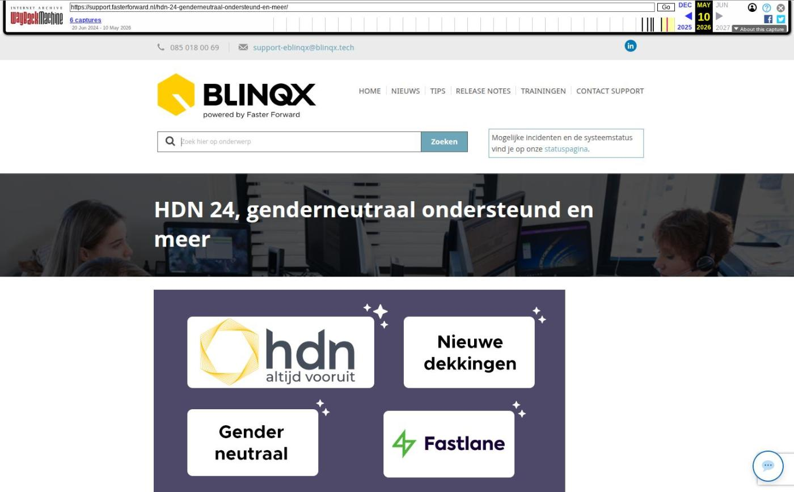

HDN 24, genderneutraal ondersteund en meer

Tekstinhoud
Op woensdag 22 mei zijn Elements en eBlinqx weer verbeterd en uitgebreid met nieuwe features. Deze release bevat onder andere HDN 24, genderneutraal ondersteund, dossier openen in Fastlane en instellingen VKG gemakkelijk instellen.
HDN24 en andere wijzingen HDN
Genderneutraal ondersteund en onbekend toegevoegd
Dossier openen Fastlane
Instellingen VKG gemakkelijk instellen
Altijd een groep bij een groepstaak
Aangemaakt door zichtbaar in taak mutatievoorstel
Nieuwe dekkingen volgens SIVI update
Overige verbeterpunten
HDN24 en andere wijzingen HDN
Elements en eBlinqx zijn voorbereid op de HDN 24 release die plaats vindt op 25 mei. Daarnaast gaat HDN wijzigingen doorvoeren op hun API. Ook hiervoor hebben we voorbereidingen gedaan. Op deze manier zorgen we ervoor dat Elements en eBlinqx aansluit op de HDN standaard en je zonder problemen HDN berichten kunt ontvangen en verzenden. Functioneel en visueel zal je hier weinig van merken, maar 'onder de motorkap' is er veel werk verricht.
Genderneutraal ondersteund en onbekend toegevoegd
Vanaf nu wordt genderneutraal ondersteund in Elements en eBlinqx. Per HDN 24 is het vanuit HDN mogelijk om geslacht X beschikbaar te maken en te ondersteunen in het HDN-verkeer.
In Elements en eBlinqx zijn diverse wijzigingen doorgevoerd om genderneutraal door te voeren. Hierbij kan je onder andere denken aan:
X als geslacht kunnen selecteren onder een persoon
De icoontjes voor man, vrouw en genderneutraal zijn aangepast. Op andere plaatsen zijn deze iconen verwijderd
De tags die het geslacht ophalen halen ook X op. Let op: er zijn andere tags waarvan de input afhankelijk is van het geslacht, bijvoorbeeld aanhef formeel. Deze zijn niet generiek aangepast. Wil je dat deze goed reageren op geslacht X stuur dan een e-mail naar support@fasterforward.nl
Rapportages en SMART halen het geslacht X op. Maatwerkrapportages zijn niet aangepast.
Matchen van Aplaza berichten
API
Het kan zijn dat andere partijen, bijvoorbeeld adviespakketten, het geslacht X niet ondersteunen. Wanneer je gegevens wilt exporteren naar een partij die geslacht X niet ondersteunt dan verschijnt er een melding waarin wordt aangegeven dat geslacht X niet wordt ondersteund met het verzoek het geslacht te veranderen.
Ook is de optie 'Onbekend' toegevoegd aan het veld geslacht. Dit veld kan als terugval gebruikt worden bij bijvoorbeeld een conversie of gegevens die via de API binnenkomen en het geslacht niet bekend is. Wanneer je bijvoorbeeld een dossier of persoon aanmaakt dan komt het geslacht automatisch op 'onbekend' te staan. Deze dien je handmatig aan te passen naar het juiste geslacht.
Dossier openen Fastlane
Je kunt nu vanuit het klantdossier – tabblad Fastlane het dossier bekijken als de synchronisatie voor deze klant in Fastlane uitstaat. Dit door te klikken op 'Dossier bekijken'. Ook komt er een melding te staan dat de synchronisatie uitstaat. Voorheen bleef het scherm wit en was het niet mogelijk om het dossier te bekijken.
Instellingen VKG gemakkelijk instellen
De inloggegevens VKG kan je vanaf nu ook instellen onder Mijn instellingen. Zo kan je deze gemakkelijk zelf instellen. Eerst konden deze gegevens alleen ingesteld worden via Beheer – Organisatie & Personen. Hier hebben alleen beheerders toegang toe. Wil je hiervan gebruik maken stuur dan een e-mail naar support@fasterforward.nl.
Altijd een groep bij een groepstaak
Vanaf nu is het verplicht om een workflowgroep te selecteren bij het aanmaken van een groepstaak. Zo komt de taak altijd op een groep te staan. Eerder was dit niet verplicht, waardoor het kon gebeuren dat een groepstaak alsnog op naam van maar één persoon kwam te staan.
Aangemaakt door zichtbaar in taak mutatievoorstel
Bij het aanmaken van een mutatievoorstel kan je aangeven dat er een rappeltaak aangemaakt moet worden. Bij deze taak wordt nu in de hoover getoond wie het mutatievoorstel en dus ook de taak heeft aangemaakt.
Nieuwe dekkingen volgens SIVI update
Als via ADN en Aplaza berichten binnenkomen, worden de nieuwste, bijbehorende dekkingen en/of soorten documenten aangemaakt. Deze zijn namelijk uitgebreid volgens de SIVI richtlijnen van april. Hiermee zijn alle te selecteren verzekeringen up-to-date om correct te verwerken in een klantdossier.
Nieuwe dekking
6075 AVB Garage
Overige verbeterpunten
Wanneer je nu via het dashboard dossiers opzoekt, wordt er weer gezocht op alle dossierstatussen. Beëindigde dossiers worden dus niet meer uitgesloten.
Aan de rapportage CRM – Overzicht producten per klantdossiers zijn kolommen met particuliere en zakelijke telefoonnummers toegevoegd. Aan de rapportage Management – Renteoverzicht uit dossiers inclusief productgegevens zijn de kolommen 'Dossierstatus' en 'Einddatum looptijd' toegevoegd. De kolom 'Deelnemer' is toegevoegd aan de rapportage CRM – Overzicht producten per klantdossier. Wil je deze kolommen zien, zet ze dan aan in Rapportagebeheer
Voor serviceproviders is het nu mogelijk om een formule onder een kantoor toe te voegen of te verwijderen via het dossier van de deelnemer. Op deze manier kunnen meer gebruikers de formule aanpassen. Voorheen was dit alleen mogelijk via Beheer – Organisatie & Personen. Hier hebben alleen beheerders toegang toe
Geplaatst op 14 mei 2024 (Laatste update: 22 mei 2024)
Laatste 5 releasenotes
Nog meer data en documenten vergelijken »
Gemakkelijk data en documenten vergelijken »
Verbeteringen boekhouding en facturatie »
Verbeteringen gespreksopname en onder de motorkap »
Verbeteringen onder de motorkap en gespreksopnames »